            <!-- ===== DESKTOP SIDEBAR ===== -->
            <aside
                class="sidebar"
                id="desktop-sidebar"
            >
                <div class="sidebar-header">
                    <button
                        type="button"
                        class="sidebar-logo"
                        id="sidebar-toggle"
                        aria-label="Toggle sidebar"
                        title="Toggle sidebar"
                    >
                        <div
                            class="sidebar-logo-icon"
                        ></div>
                        <span
                            class="sidebar-logo-text"
                        >Fusion Angle</span>
                    </button>
                </div>
                <nav class="sidebar-nav">
                    {{SIDEBAR_NAV_ITEMS}}
                </nav>
                <div class="sidebar-footer">
                    <div class="sidebar-member">
                        <div
                            class="sidebar-avatar"
                        ><svg
                            xmlns="http://www.w3.org/2000/svg"
                            width="20"
                            height="20"
                            viewBox="0 0 24 24"
                            fill="none"
                            stroke="currentColor"
                            stroke-width="2"
                            stroke-linecap="round"
                            stroke-linejoin="round"
                        ><path
                            d="M19 21v-2a4
                                4 0 0 0-4-4H9a4
                                4 0 0 0-4 4v2"
                        /><circle
                            cx="12" cy="7"
                            r="4"
                        /></svg></div>
                        <div class="flex-fill">
                            <p
                                class="text-sm
                                    font-medium
                                    truncate"
                                id="sidebar-member-name"
                            ></p>
                        </div>
                    </div>
                </div>
            </aside>
